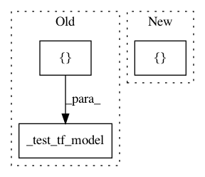

2114ab17979dc3c08b0468c3b799b7836f2d9be7,coremltools/converters/tensorflow/test/test_convnets.py,TFConvNetTest,test_convnet_batchnorm,#TFConvNetTest#,85
Before Change
x = conv_cell(a, W1, has_batchnorm=True)
W2 = tf.Variable(tf.truncated_normal([3, 3, 4, 2], stddev=0.3))
x = conv_cell(x, W2, has_batchnorm=True)
self._test_tf_model(graph, {a.op.name: [1, 8, 8, 3]}, [x.op.name])
self._test_tf_model(graph, {a.op.name: [10, 8, 8, 3]}, [x.op.name])
def test_simple_convnet(self):
def weight_variable(shape):
After Change
W2 = tf.Variable(tf.truncated_normal([3, 3, 4, 2], stddev=0.3))
x = conv_cell(x, W2, has_batchnorm=True)
self._test_tf_model(graph, {a.op.name: [None, 8, 8, 3]}, [x.op.name],
batch_sizes=[1,4])
def test_simple_convnet(self):
def weight_variable(shape):
In pattern: SUPERPATTERN
Frequency: 4
Non-data size: 3
Instances
Project Name: apple/coremltools
Commit Name: 2114ab17979dc3c08b0468c3b799b7836f2d9be7
Time: 2019-10-24
Author: shuoxin_lin@apple.com
File Name: coremltools/converters/tensorflow/test/test_convnets.py
Class Name: TFConvNetTest
Method Name: test_convnet_batchnorm
Project Name: apple/coremltools
Commit Name: 2114ab17979dc3c08b0468c3b799b7836f2d9be7
Time: 2019-10-24
Author: shuoxin_lin@apple.com
File Name: coremltools/converters/tensorflow/test/test_convnets.py
Class Name: TFConvNetTest
Method Name: test_convnet_classifier
Project Name: apple/coremltools
Commit Name: 2114ab17979dc3c08b0468c3b799b7836f2d9be7
Time: 2019-10-24
Author: shuoxin_lin@apple.com
File Name: coremltools/converters/tensorflow/test/test_convnets.py
Class Name: TFSingleLayerTest
Method Name: test_conv1d_dense
Project Name: apple/coremltools
Commit Name: 2114ab17979dc3c08b0468c3b799b7836f2d9be7
Time: 2019-10-24
Author: shuoxin_lin@apple.com
File Name: coremltools/converters/tensorflow/test/test_convnets.py
Class Name: TFConvNetTest
Method Name: test_convnet